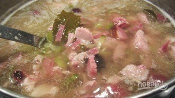

Состав / Ингредиенты:
Мясо 450 Грамм
(свинина, говядина, курица или все вместе)
Мясные изделия 300 Грамм
(ветчина, колбаса, копчености и т. д.)
Растительное масло 2 Ст. ложки
Чеснок 2-4 Зубчиков
Луковица 1 Штука
Томатная паста 1 Ст. ложка
Маринованные огурцы 2-4 Штук
Маслины По вкусу
(+ каперсы по желанию)
Лимон и сметана По вкусу
соли и перца – По вкусу
Как приготовить "Суп-солянка (классический рецепт)"
Шаг1
Мясо вымойте, выложите в кастрюлю и залейте водой.
Туда же отправьте копчености. Можно также добавить лавровый лист и овощи для аромата.
Варите бульон на медленном огне пару часов до готовности мяса.
Шаг2
Когда мясо сварилось, аккуратно достаньте его из бульона, остудите немного и измельчите.
Бульон процедите и снова отправьте на огонь. Выложите туда нарезанное мясо.
Шаг3
Следом отправьте мясные деликатесы.
В данном случае это ветчина и салями.
Шаг4
Нарежьте огурчики. Маслины можно добавлять перед подачей в тарелку или сразу отправить в бульон.
Я предпочитаю второй вариант. Кроме того, я советую добавить горсть каперсов.
Шаг5

Выложите все в бульон, доведите до кипения и варите на медленном огне.
Посолите по вкусу.
Шаг6
Параллельно очистите и измельчите лук с чесноком.
Выложите на сковороду с растительным маслом и обжарьте.
Добавьте томатную пасту и влейте немного бульона или рассола от огурцов.
Шаг7
Посолите, добавьте перец и специи по вкусу.
Также я советую добавить чайную ложку сахара.
Томите соус минут 5, помешивая.
Шаг8
Выложите его в бульон, аккуратно перемешайте и варите солянку еще минут 5-7.
Шаг9
Выключите огонь, накройте кастрюлю крышкой и оставьте на полчасика, чтобы солянка настоялась.
Подавайте к столу горячей, дополнив лимоном и сметаной по желанию.
Приятного аппетита!
Назад